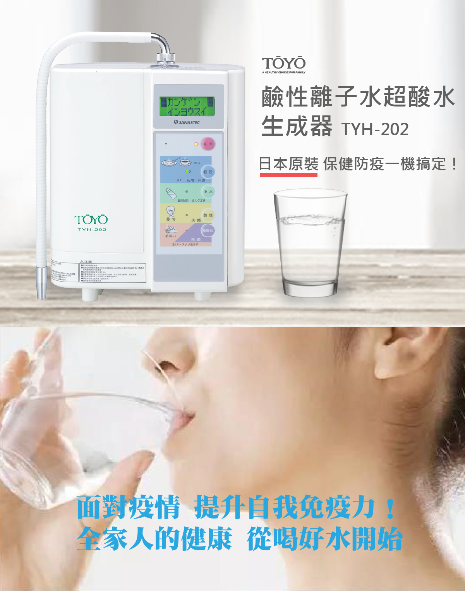
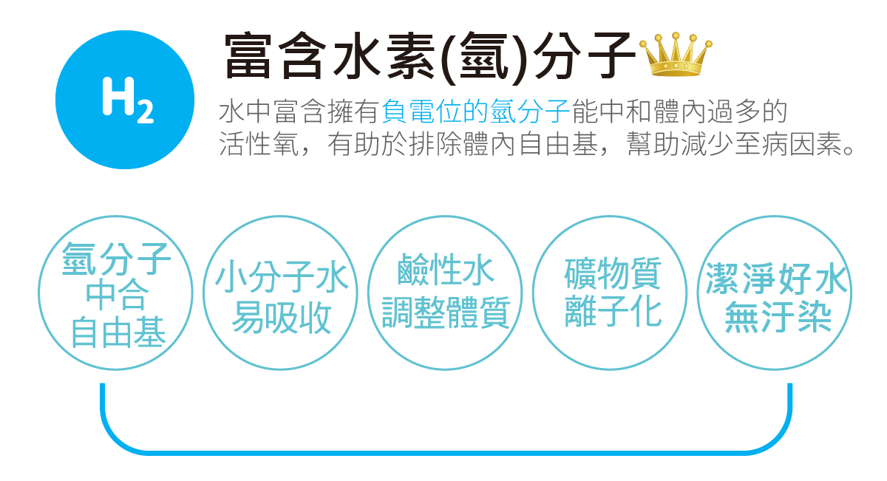
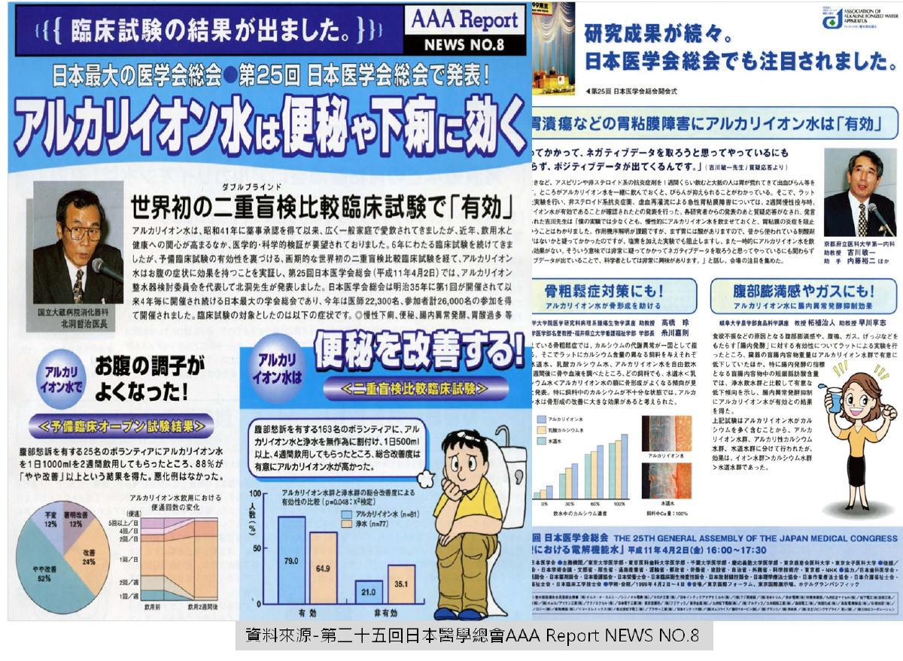
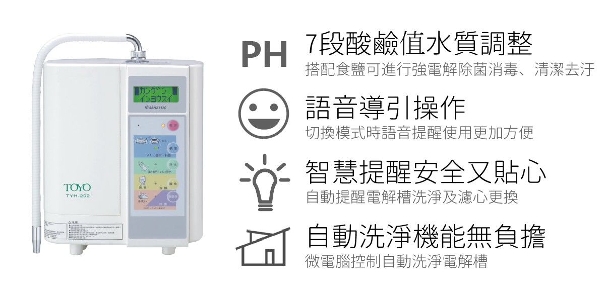
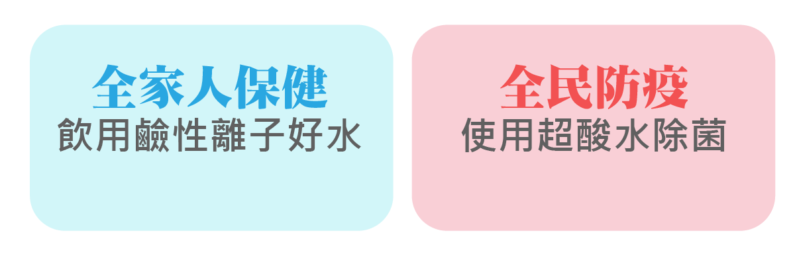
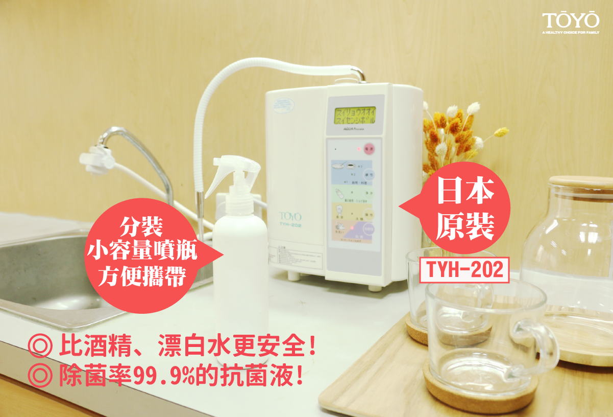
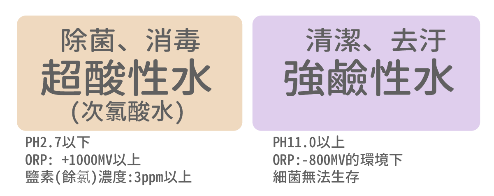
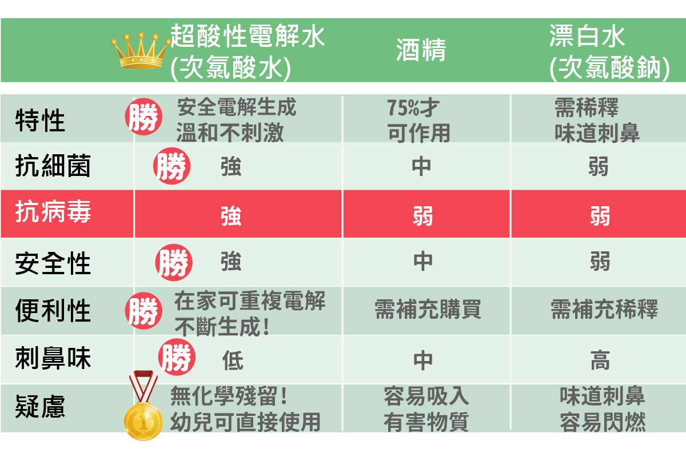
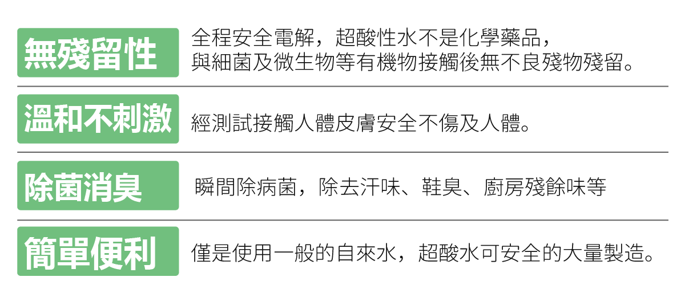
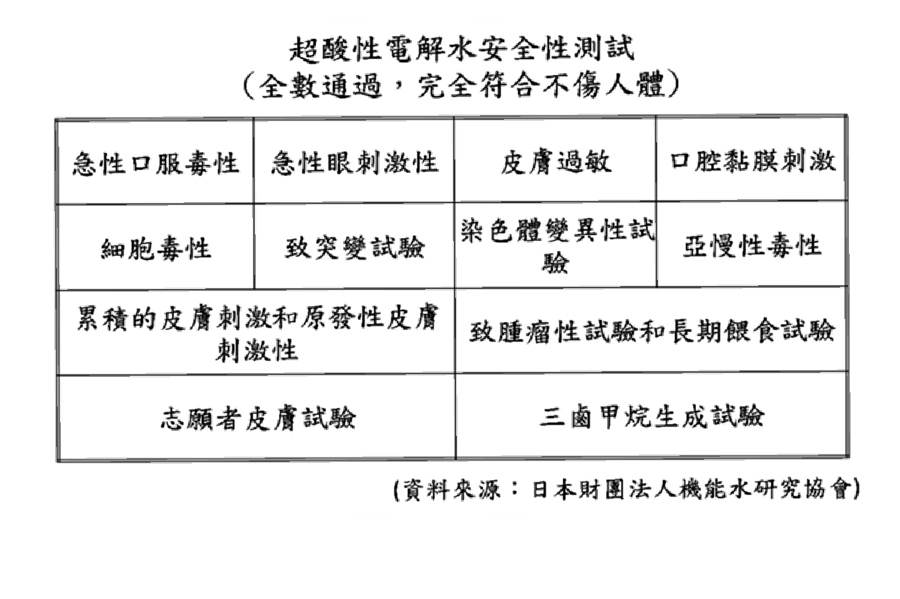

鹼性離子水五大好水健康特性

富含負電位水素(氫)分子排除體內自由基、鹼性水質幫助調整體質、小分子團水易吸收、礦物質離子化好吸收、潔淨無汙染不含氯氣/細菌/雜質/重金屬。
日本醫學總會證實對人體健康有效

TYH-202生成器經日本厚生労働省醫療用具承攬番號20500BZZ00519認證，對於慢性下痢、便秘、腸胃道異常發酵、胃酸過多，具有幫助。
日本原裝4大商品特色

電解水生成器酸鹼值生活應用

健康の水 鹼性水PH8.0~10.0
■日常保健飲用。
■烹飪料理、沖泡茶葉。
■幫助減少便祕、腸胃道問題。
美容の水 酸性水PH4.0~6.0
■洗顏、清潔手部。
■具收斂、洗淨效果。
乾淨の水 中性淨水。 PH7.0
■服用藥物、沖泡奶粉。
超鹼性水 PH11.0 (須添入食鹽不可飲用)
■去油汙、污漬。
■野菜、魚肉去腥除澀。
■具洗淨效果，減少洗劑用量。
超酸性水 PH2.7以下(須添入食鹽不可飲用)
■可製作【次氯酸水除菌液】超酸性電解水。
■瞬間除菌、脫臭。
■溫和不刺激、無化學殘留。
■用於食器消毒後，建議將死亡的細菌(蛋白質)擦拭
在家就能輕鬆製作次氯酸水除菌電解水!

準備食鹽及可使用生成器連續製做次氯酸水比酒精、漂白水更安全! 除菌率99.9%的抗菌液!
防疫、除菌，同時生成次氯酸水、強鹼性水

超酸性水（次氯酸水）！消毒水大評比

超酸性水（次氯酸水）特性

超酸性電解水安全性測試

超酸性電解水不是鹽酸不會腐蝕皮膚！超酸性水氫離子濃度之 PH 值為 2.7以下 所以超酸性電解水是「酸性」而不是「酸」，不會像鹽酸腐蝕皮膚。其安全性經日本財團法人機能水研究協會證實。
TYH-202生成次氯酸水步驟
商品描述
【日本原裝進口】
日本製生成器，品質安心，全球23國家40地區，月銷150000台
日本厚生労働省醫療用具承認番號20500BZZ00519號
【水素水5大好處】
-富含負電位水素(氫)分子排除體內自由基。
-鹼性水質幫助調整體質。
-小分子團水易吸收。
-礦物質離子化好吸收。
-潔淨不含氯氣/細菌/雜質/重金屬。
【多段PH值電解水素水】
-鹼性水日常保健飲用。
-酸性水洗顏美容收斂。
-中性水服藥、幼兒泡牛奶。
-強鹼性水去油汙去腥減少洗劑。
-強酸性水(電解式次氯酸水)除菌、消臭、食器清洗。
商品內容
電解水主機、本體濾心TA-800T、中文商品說明書、日文商品說明書、液晶顯示中日文對照表、電解用添加食品級鈣粉、不鏽鋼鹼性出水管、pH檢測液、酸鹼性水分歧栓、一年保證書。
商品規格
| 型號 | TOYO TYH-202 |
| 電源 | AC110V 50/60HZ |
| 消耗電力 | 約200W |
| 尺寸 | W26.4cm X D19.5cm X H38.8cm |
| 重量 | 5.0KG |
| 電解方式 | 自來水過濾供給連續生成 |
| 電解能力切換 | 鹼性離子水3段/中性淨水1段/ 酸性離子水1段/強酸性水/強鹼性水 |
| 電解材質 | 鈦鍍白金電極板 |
| 電解生成量 | 3～8Ｌ/分(視原水水壓而定) |
| 電極洗淨 | 自動洗淨（洗淨時由微電腦控制） |
| 濾材 | 粒狀抗菌活性碳+亞硫酸鈣 |
| 游離殘留氯 | 總濾過水量12000L以上除去率80% JIS S3210試驗 |
| 無法除去成份 | 溶於原水中的鹽份及金屬 |
| 壽命 | 約一年，或通水12000L後(依水質差異有所不同) |
| 電源裝置 | 保險絲125V 5A |
| 保護裝置 | 熱水警報器，溫度保護，過電流(電壓)保護 |
週邊配件

TOYO 雷射酸性水龍頭

濾頭

愛惠浦 4C 複合式濾心

AK-305 樹脂濾芯
.JPG)
AK-305 PP纖維濾芯

AK-305 活性碳濾芯

TA-903 快捷式前置濾芯

TA-903 快捷式前置濾芯（含蓋）

TA-903 快捷式前置濾芯（組）

TA-800T

MW-7000C 主體濾芯（日製）